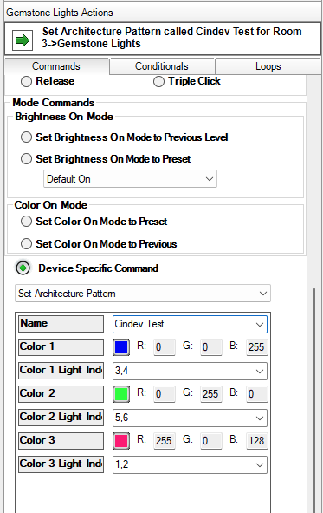

Gemstone Lights
Compatible Control4 Systems:
Designed to work with Control4 2.10.x, Control4 3.x.
Compatible Hardware:
Gemstone Lights
Documentation, Driver Download & Change Log:
https://drivercentral.io/platforms/control4-drivers/lighting/gemstone-lights/
Installation/Integration Support
Please contact manufacture directly:
Gemstone Lights Manuals
Content
Add a touch of elegance and sophistication by replacing your pot or can lights with permanent track lighting. From sleek and modern to warm and inviting, our Architectural Lighting options offer something for every taste and style. Upgrade your home or commercial building today and experience the beauty and versatility of Architectural Lighting. With endless possibilities to choose from, you’ll find the perfect pattern to match any look you desire!
- Set up the lights using the Gemstone app firist.
- Add gemstone_lights.c4z to your driver folder and add it to your project
- Enter the IP address for the lights in the Network tab in Composer
- If everything was filled out correctly, the Connection property will show an online status
- In Composer, click on file in the top left corner, and then select "Refresh Navigators"
- Cloud Status: Displays driver license state
- Driver Status: Displays driver related information
- Driver Version: Displays driver version
- Driver Actions:
- Setup Driver: If the proper IP address is entered in, sets up the driver and begins communication with the lights controller
- Reset Driver: Restores driver to its default state
- Get Version Info: Gets the version number of the firmware
- Automatic Updates: Allows the Cloud Driver to automatically update the driver when a new version is available
- Debug Mode: Displays additional information on the lua tab for debugging purposes
- Connection: Displays the current connection status of the lights
- Selected Pattern: Displays the current current pattern
- Selected Pattern JSON: Displays the current current pattern's JSON. You can edit the values and send them to the controller. Note that these changes are not saved to the default pattern and the pattern will go back to the default settings next time it is selected.
- Follow Gemstone's official setup process and configure the lights through the app first before setting up the driver
- Firmware 1.1.0 and 1.1.1 breaks how this driver communicated to the Gemstone Controller. Versions after and before those work just fine. However, if you use the Driver Action: "Get Version Info", the driver will get the version number and adjust how it sends data and work again, without the need for updating the driver or firmware.
- Select Pattern: Allows you to select a Gemstone created pattern.
- Set Pattern Speed: Allows you to send a speed value for a patterns with speed properties.
- Send Custom Pattern JSON: Send custom pattern data to the controller. JSON must be formatted like it is in the "Selected Pattern JSON" Property.
- Set Architecture Pattern: Allows you to create your own light pattern.
- The "Color 1-3" parameters allow you to set their RGB color values
- "Color 1-3 Light Index" is where you select which light you want that color to display on. Lets say you have a pixel count of [10,20,30,10] the lights treat the first 10 lights as index 0..9 and then the next 20 lights start at index 10. Enter each index you want the color to display on, seperated by a comma with no spaces in between. See the picture for an example

- Connection_Status (STRING)
- Online, Failed to Check In, Polling Started, Polling Stopped
- The current communication state of the driver
Cindev drivers include a streamlined debug workflow and a one-click pipeline to DriverCentral Support. Use the steps below to capture the right data fast and get help without leaving ComposerPro.
Once Property Debug Mode is on, a Property Debug Actions will appear with the following options:
- View Diagnostics Prints driver stats to the Lua tab.
- View Project Hierarchy Lists drivers, filenames, and proxies.
- Create Support Ticket Preps logging + fields for Support.
- Submit Ticket Sends the information to DriverCentral.
Create and Submit a Ticket
- Turn On Debug Mode (driver property).
- Go to Debug Actions Create Support Ticket.
- Enter your Tech Reply Email (where Support should respond).
- Enter an Issue Description (what you did, expected, and observed).
- Reproduce the issue or run your test steps.
- Select Debug Actions Submit Ticket.
- A Ticket ID will be displayed under Driver Status and also printed on the Lua tab for reference.
- Support will receive your information and email you back at the address you provided.
Click here for more information
https://www.gemstonelights.com/warranty/
brought to you by:
Cinegration Development, LLC

www.cindev.com
www.drivercentral.io/cinegration/
We are always looking to improve our drivers.
Please send your suggestions to: info@cindev.com